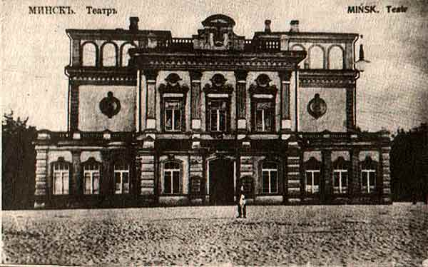
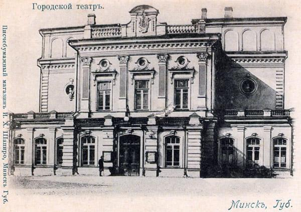
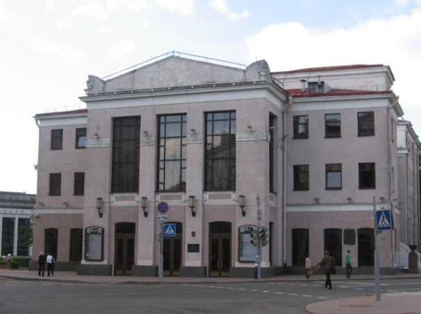
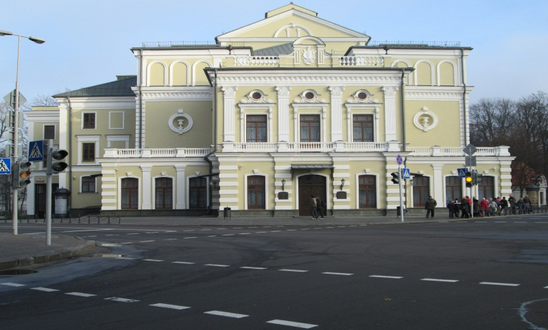

Мінскі губернатар князь М.М. Трубяцкі паставіў перад Гарадской думай пытанне
аб узвяддзенні новага тэатра, бо стары на Саборнай плошчы, згарэў у 1884 годзе. 18
жніўня 1887 года Дума адзінагалосна пастанавіла абраць будаўнічую камісію і
ўскласці на яе абавязкі па зборы сродкаў. 26 чэрвеня 1888 года а трэцяй гадзіне дня да
месца закладкі будынка будучага тэатра прыбылі вялікі князь Уладзімір
Аляксандравіч з жонкай – вялікай княгіняй Марыяй Паўлаўнай. Пратаіерэй
Кацярыненскага сабора Ніканор Смоліч правёў набажэнства, і іх імператарскія
высокасці апусцілі некалькі залатых манет на месцы закладкі і паклалі на іх па цэгле.
«Так быў закладзены падмурак лепшаму на сённяшні дзень паводле прыгажосці і
вытанчанасці будынку ў горадзе – мінскаму гарадскому тэатру», – апавядаеца ў
«Памятной кніжке Мінской губерніі на 1910 г.», выдадзенай годам раней Мінскім
губернскім статыстычным камітэтам.Будаўніцтва тэатра пачалося ў 1888 годзе, але па меры таго, як вымуроўваліся
сцены, рабілася відавочным, што сабраных грошаў (25 тысяч рублёў) не хопіць.
Будоўля спынілася, і толькі пасля таго, як Караль Чапскі прапанаваў прадаць купцу
Рагавому гарадскі лес з ўрочышча Міхалянка за 45658 рублёў даўгабуд быў
завершаны. Разам з усімі дадатковымі зборамі і ахвяраваннямі новы тэатр каштаваў
гораду 102 тысячы рублёў.Будынак тэатра быў узведзены ў 1890 годзе паводле праекта архітэктара
К.Казлоўскага. Будаўніцтва ажыццяўляў інжынер К. Увядзенскі. Архітэктар В.Ф.
Маас кіраваў работамі па аздабленні інтэр’ераў.
Тэатр быў урачыста адкрыты 17 (5 па ст.ст.) чэрвеня 1890 года. У праекце тэатра
былі скарыстаны ўсе тэхнічныя дасягненні таго часу. Сцэна мела глыбіню 10,6 м,
шырыню 14,9 м, вышыню 17,0 м. Гэта давала шырокія магчымасці для рэалізацыі
механічных прыёмаў, устаноўкі розных дэкарацый, падымання заслоны.
Падковападобнай формы глядзельная зала мела тры ярусы і была разлічана на 550
месцаў, пазней іх стала 700. Партэр і ложы першага яруса прызначаліся для больш
заможнай публікі, балкон – для бяднейшых. Заслону для сцэны выканалімаладыя
мастакі-дэкаратары Ю.Рэйнберг і Г. Веніг. Інтэр’ер упрыгожвалі лепка, роспісы на
сценах, партрэты Міхаіла Глінкі, Александра Пушкіна, Мікалая Гогаля, Аляксандра
Астроўскага. Партал сцэны быў аздоблены ляпным гербам Мінскай губерні. Будынак
вызначыў кампазіцыю Аляксандраўскага сквера. Галоўны фасад тэатра выходзіў на
плошчу, утвораную скрыжаваннем вуліц Падгорнай (К. Маркса) і Петрапаўлаўскай
(Ф.Энгельса). На яго адкрыцці прысутнічалі галава горада Мінска граф Караль фон
Гутэн-Чапскі і губернатар Мінскай губерні М. М. Трубяцкі са сваёй світай. Увечары
быў пастаўлены аматарскі спектакль О. Фелье «Сфінкс», пасля спектакля адбыўся
банкет. Першы сезон у тэатры пачаўся 9 верасня 1890 года спектаклем А. Пацехіна
«Злоба дня». Кошт білетаў (ад 20 капеек за месца на балконе («на галёрцы») да 5
рублёў за месца ў ложы) дазваляў наведваць спектаклі практычна ўсім слаям жыхароў
горада. У будынку тэатра выступалі оперныя, драматычныя і аперэтачныя трупы з
Вільні, Масквы і Санкт-Пецярбурга, Парыжскі тэатр пад кіраўніцтвам М. Метэрлінка,
«Італьянская опера» Ф. Кастэлана. Апроч спектакляў у ім праходзілі розныя гарадскія
ўрачыстасці. Так, у 1899 г. мінчукі адзначалі тут 100-годдзе з дня нараджэння А.С.
Пушкіна. На першыя два гады тэатр быў здадзены вядомаму антрэпрэнёру А.
Картаваму, які адначасова кіраваў і тэатрам у Вільні. Для абодвух тэатраў ён набраў
драматычную і оперную трупы даволі моцнага складу. Зараз тэатр
знаходзіцца на вул. Энгельса, 7.



